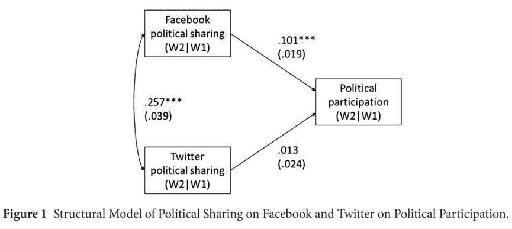

收录于合集 #政治传播 12个
文献来源：Halpern, D., Valenzuela, S., & Katz, J. E. (2017). We face, I tweet: How different social media influence political participation through collective and internal efficacy. Journal of Computer-Mediated Communication , 22(6), 320-336.
作者简介：Daniel Halpern Jelin，传播学博士，智利天主教大学教授，研究领域为社交媒体，数字媒体，电子政府以及组织中的信息技术；Sebastián Valenzuela，智利天主教大学传播学院副教授，研究涉及新闻和社交媒体对公共舆论、公民群体和民主政治的作用；James Katz，波士顿大学传播学院新媒体系教授，研究领域为人工智能、社交媒体、移动通信以及人机交互。
一、导言
社交媒体会如何改变我们的政治参与？尽管学界对社交媒体促进政治参与的作用颇有共识(Boulianne, 2015; Skoric, Zhu, Goh, & Pang, 2016)，但仍然存在一些悬而未决的问题。社交媒体的这种促进作用是依靠对其他影响因素（如政治兴趣）的强化，还是其本身就可以动员消极的公民？这种促进作用在不同社交媒体平台的表现是否有所不同？本文作者引入了内部效能和集体效能的理论解释模型，研究分析了智利大选期间全国成人样本的两波面板数据，发现其国内最重要的两个社交媒体平台——Facebook和Twitter——在促进政治参与方面出现了有趣的差异。
二、 社交媒体、政治参与和政治效能感
现有文献为社交媒体影响政治参与提供了多种解释。一种解释是：数字网络强化了原有的“弱连接”，增加了网络用户了解和参与公民生活的机会(Gil de Zúñiga, Jung, &Valenzuela, 2012)。另外，社交媒体用户对而其他用户发表政治内容的偶然接触，很大程度上促进了其对政治问题的了解，进而促进了参与(Xenos, Vromen, &Loader, 2014)。第三，社交媒体使公民有更多机会直接与政治组织接触。最后，参与会在社交媒体中传染，一个热衷于参与的朋友或多或少会对我们产生影响(Bond et al., 2012)。这些解释可以从人际传播在媒体和公民参与之间起到的中介作用的研究中求得共鸣——人际传播能够促进公民对其共同体所面对的问题产生自己的理解，并帮助形成一个活跃的公民群体。社交媒体正是从这一方面为政治参与提供了基础，公民在社交媒体（Facebook或Twitter）进行政治内容的分享，无疑会促进其政治参与。
如果说信息是社交媒体对政治参与产生直接影响的途径，那么其间接影响则通过政治效能感完成。政治效能感（或内部效能感），简而言之，是指个人对其自身影响政治体系的能力的认知。由于直接影响了公民参与的动机，效能感对政治参与行为至关重要（Abramson & Aldrich, 1982）。内部效能感与另外两个概念相关且相异：外部效能感和集体效能感。外部效能感指的是个人对于政府是否愿意回应自己的感知(Esaiasson, Kölln, & Turper, 2015)；而集体效能感则指个人是否相信自己能同他人一道达成集体目标（Bandura ,1997）。
三、 社交媒体及其可供性
对于我们熟知的社交媒体，Ellison给出的定义是：这一媒体形式由用户提供大部分内容、使用户公开与他人联系、允许用户收发信息并与他人的内容互动(Ellison,2013)。尽管社交媒体存在以上普遍性特征，但不同社交媒体平台的功能可供性（affordance）却存在差异。功能可供性即某一平台允许用户用它来做什么事情。作者认为，Facebook与Twitter在功能可供性上的差异或许会导致其影响政治参与模式的不同。
Facebook和Twitter作为最受欢迎的社交媒体平台，其功能可供性存在着明显的差异。最显而易见的差异是：在Facebook上，用户们往往与其他用户相互联系（加好友），从而形成相对对称的社交网络；而在Twitter上，用户则是遵循自己的兴趣关注其他用户（点关注），而不考虑对方是否也关注自己。有学者认为，从Facebook上获得的信息本质是社交获取；而在Twitter上获得的信息本质则是认知获取(Hughes, Rowe, Batey, &Lee, 2012)。此外，Facebook上的信息更加社会化，即用户本身也参与到了信息网络之中，看得到同一网络下的其他个体如何进行评论；相反，Twitter用户更像是从其他用户那里单向获取信息。
两大平台的这些差异使我们很容易将它们分别与不同的效能感联系起来。由于分享和讨论是集体效能感的决定性因素，所以Facebook应该更有利于增强用户的内部效能感，并促进集体行动。同样的，在Twitter上发表政治看法或许会被无数用户所看到，这种体验带来的内部效能感是其他媒体无法比拟的，因此Twitter更有助于培养用户的内部效能感。除此之外，作为政治参与的重要中介变量，无论何种效能感都有利于政治参与；但作者假设Twitter的使用对政治参与的影响更多受到内部效能感的调节，Facebook的使用对政治参与的影响更多受到集体效能感的调节。
四、 研究设计与结果
作者选择智利作为研究对象，采用了2013年的调查问卷数据。截至当时，智利88%的网民使用Facebook，也有28%的网民使用Twitter，是拉丁美洲社交媒体普及率最高的。数据来自两波面板问卷调查，最终有效问卷527份。作者共测量了6个主要变量，包括政治参与、内部效能、集体效能、外部效能、Facebook政治分享、Twitter政治分享。考虑到变量间复杂的调节关系，作者运用了顺序的模型建构而非单一结构模型，并使用自回归同步面板模型来容纳两波调查间的变化。
作者首先估计了社交媒体上的政治分享与政治参与间的直接关系，发现在Facebook的政治分享直接与政治参与行为正相关，而Twitter上的政治分享却无显著关系。这一结构模型如下图所示：

随后，作者又检验了在Facebook和Twitter上的政治分享分别与内部效能感和集体效能感有何联系。一如作者先前的假设，在Facebook上分享政治内容与集体效能感关系更强，而在Twitter上的分享则与内部效能关系更强。值得注意的是，作为控制变量的外部效能感与两种平台的政治分享均不相关。结构模型如下图所示：
第三个结构模型检验了集体效能感和内部效能感是否与政治参与相关，并得到了预期的结果，两种形式的效能感均与政治参与呈正相关。结构模型如下：
最后，作者对以上模型进行了整合，以检验在两个平台上的政治分享是否能通过效能感这一中介影响政治参与，并得到了较好的拟合。通过下图可以看出， Facebook上的政治分享能够直接影响政治参与，也能通过影响集体效能感影响政治参与；而Twitter上的政治分享只通过影响内部效能感而间接影响政治参与，对政治参与直接影响不显著。
为了进一步检验模型是否为最优，作者另外建构了替代模型：不同于上述模型中的“政治分享→效能感→政治参与”这一影响路径，替代模型遵循“效能感→政治分享→政治参与”的影响路径。结果显示，最初模型的拟合要优于替代模型，这排除了不同的影响路径对模型稳定性的挑战。另一项检验也证实了数据中的Facebook和Twitter用户并不存在显著的区别，这意味着二者的上述差异并非因为它们分别吸引了截然不同的受众，而更可能是其本身的功能可供性所导致。
五、总结与讨论
作者最终从研究中得出以下结论：
1. 在社交媒体上的政治分享增加了政治参与。
2. Facebook上的政治分享不仅直接影响政治参与，还会通过影响集体效能感影响政治参与。
3. Twitter上的政治分享与政治参与不直接相关，但可以通过影响内部效能感影响政治参与。
本文在既有研究认可社交媒体促进政治参与的基础上进一步解释了这一影响的心理运作机制，并因此发现了不同社交媒体在这一影响上的不同，推进了社交媒体与政治参与的研究。其最大的发现在于，社交媒体平台的特征虽然未必决定用户行为，但也能塑造参与者参与的心理动机来产生其独有的社会影响。更深层次来说，本文为我们如何理解工具对人的影响给出了一些启示。正如波兹曼所说，任何媒介形式都会塑造属于自己的文化（Postman,1985），本文的发现也许能为这一论断提供当代的佐证。
编译：殷昊 审校：杨端程 编辑：康张城
【政文观止Poliview】系头条号签约作者